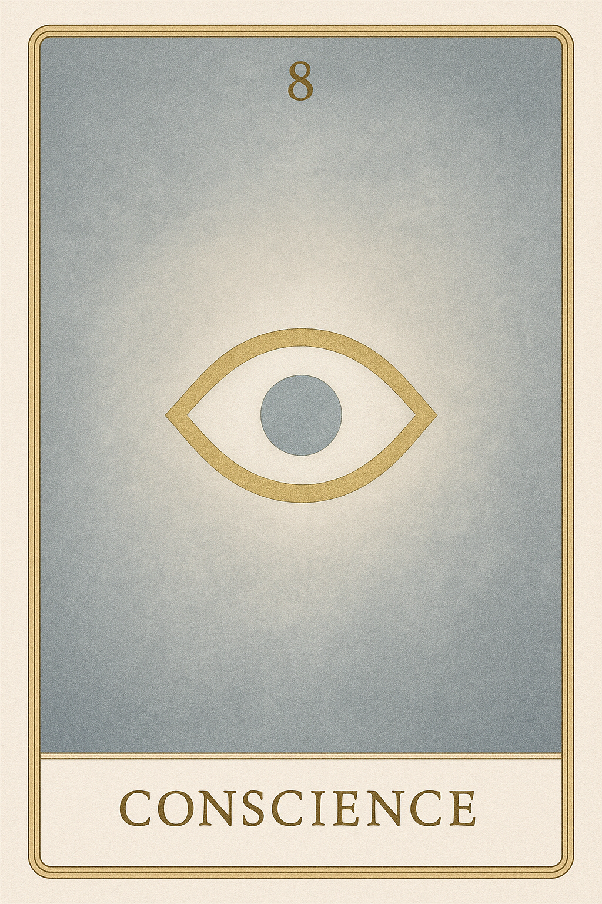
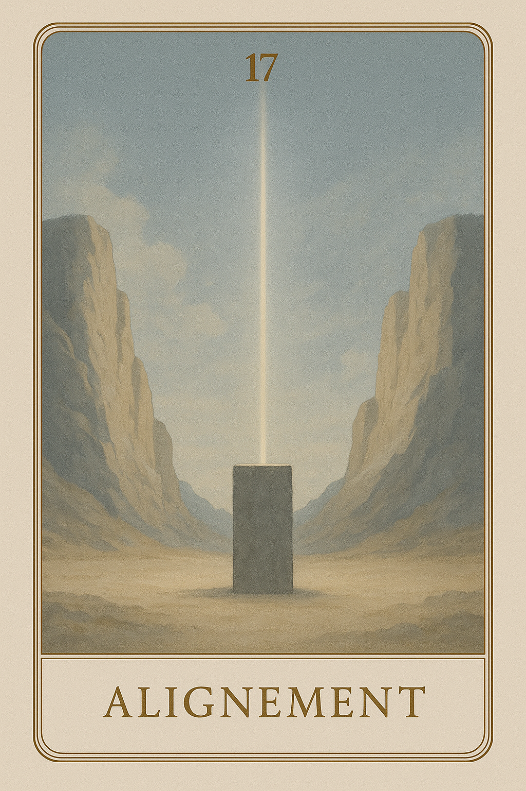
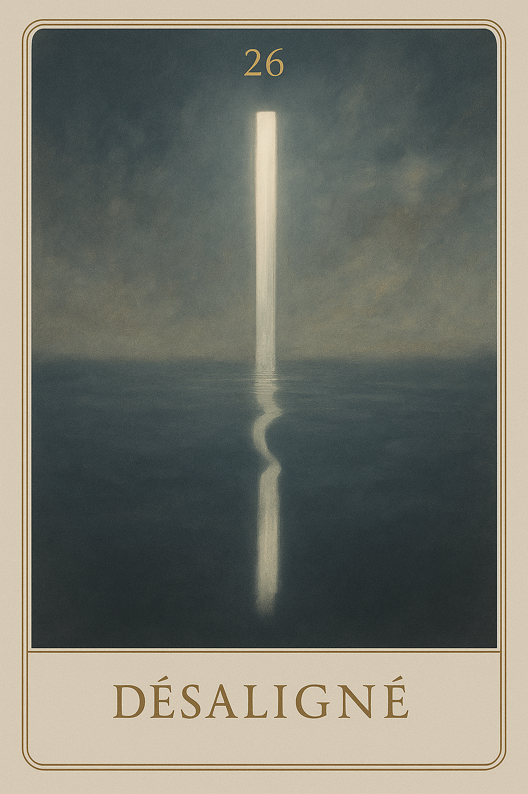
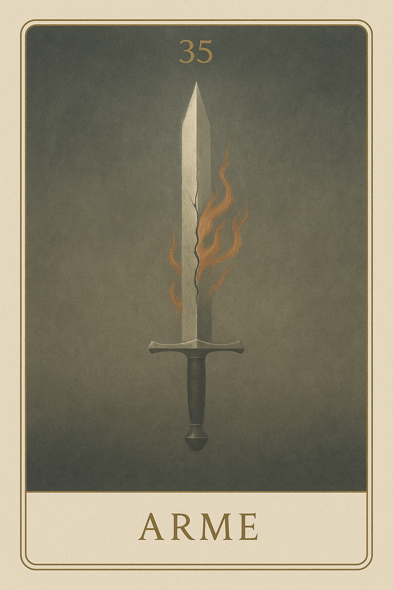
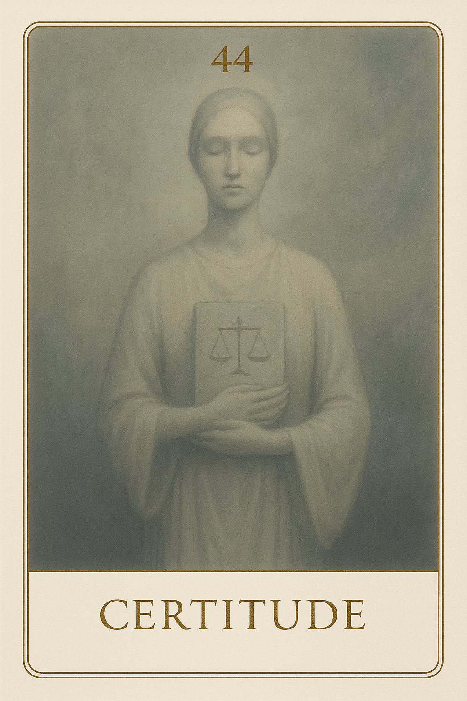
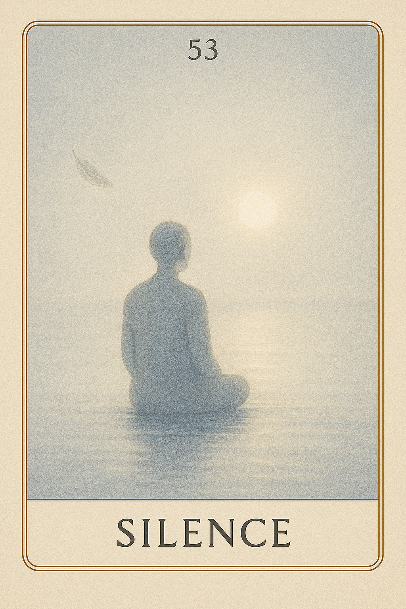
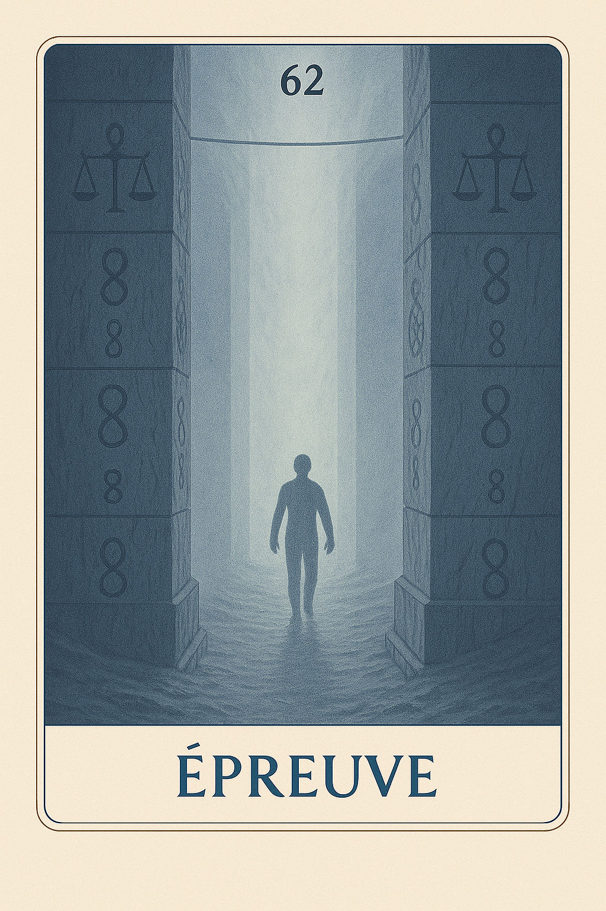
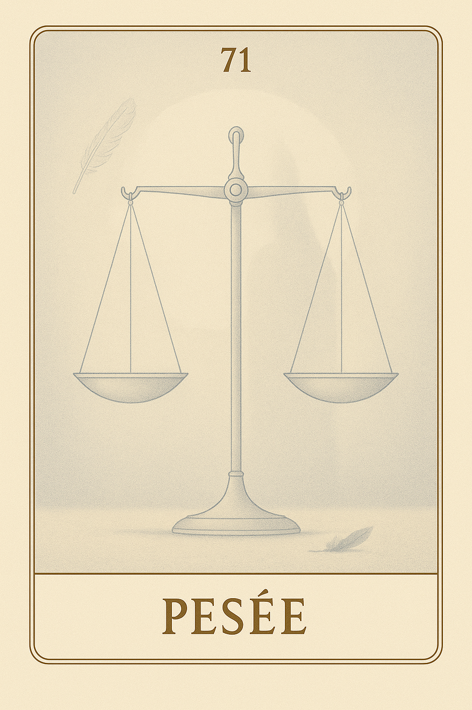
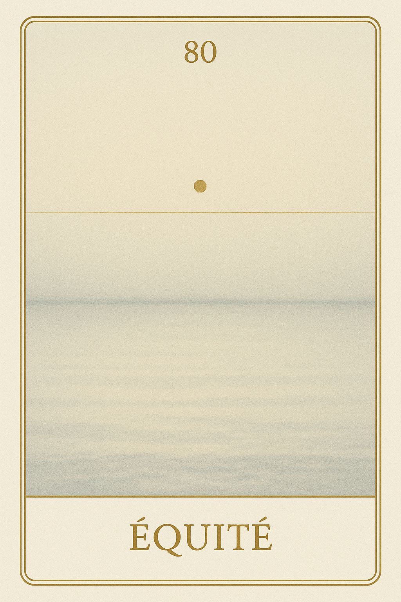

Famille 8 – Maât (Uranus)
La Famille 8, sous l’égide d’Uranus et de Maât, t’invite à confronter ton propre miroir : celui du jugement intérieur, de l’équilibre rompu et des lois oubliées. Ici, chaque carte dévoile une vérité nue, parfois inconfortable, mais toujours libératrice. C’est le royaume des ruptures salutaires, des éveils abrupts, et des réajustements profonds.
Carte 8 – Conscience
Mots-clés : lucidité intérieure, vérité nue, regard sans jugement, éveil silencieux, fin de l’illusion
Chiffre caché : 179
Lecture inversée : 9 → 7 → 1
Divinité principale : Maât
Planète secondaire : Soleil
Divinité secondaire : Râ
Interprétation de la carte 8 : Conscience (droite)
Lecture intuitive rapide
Il n’y a plus d’échappatoire. Ce que tu vois, tu ne peux plus le dénier. Ce n’est pas une révélation, mais un état de lucidité nue, sans effet, sans drame, où tout est simplement là, évident, juste. La conscience ne demande rien. Elle n’analyse pas, ne commente pas. Elle observe, éclaire, reconnaît.
1. Caractère de la personne
Tu sais. Et tu sais que tu sais. Tu ne peux plus te raconter d’histoires. Ce regard intérieur est implacable, mais paisible. Il ne juge pas : il voit avec justesse.
2. Plan affectif
Tu reconnais ce que tu vis, ce que tu veux, ce que tu fuis. Il n’y a pas encore de choix à faire, mais déjà une transparence qui rend les faux liens impossibles. L’amour commence là où la conscience est nue.
5. Plan spirituel
La conscience n’est pas une lumière extérieure. Elle émerge du dedans, comme un éclairement sans origine, une vérité posée sans mot, irréfutable.
Carte 8 : Conscience (inversée)
1. Caractère de la personne
Tu vois, mais tu détournes le regard. Tu sens, mais tu refuses de l’assumer. Et pourtant, la conscience ne disparaît pas : elle te rend opaque à toi-même si tu refuses de l’honorer.
2. Plan affectif
Tu veux ignorer ce que tu ressens vraiment. Mais l’autre perçoit ta fuite. L’amour sans conscience est une projection. Ici, l’absence de clarté intérieure crée l’illusion.
5. Plan spirituel
Tu crois que la conscience viendra d’un guide, d’un signe, d’une lumière. Mais elle est déjà là, silencieuse, pressante, entière. Tu peux la rejeter, mais tu ne peux pas l’éteindre.
Résumé de la carte 8 : Conscience
Conscience est l’état dans lequel rien ne peut plus être déguisé. Elle ne demande pas de changement. Elle est. Et ce qu’elle éclaire ne peut plus retourner dans l’ombre.
Carte 17 – Alignement
Mots-clés : : cohérence intérieure, posture juste, vérité incarnée, axe personnel, intégrité silencieuse
Chiffre caché : 224
Lecture inversée : 4 → 2 → 2
Divinité principale : Maât
Planète secondaire : Terre
Divinité secondaire : Geb
Interprétation de la carte 17 : Alignement (droite)
Lecture intuitive rapide
Tu as vu. Mais cela ne suffit pas. Ce que tu es doit maintenant se tenir dans la matière. Il ne s’agit pas de penser juste, ni même de ressentir juste. Il s’agit de vivre juste — dans la posture, la parole, l’acte silencieux. Rien n’a besoin d’être spectaculaire : ce quicompte, c’est le placement intérieur, et sa cohérence avec le monde.
1. Caractère de la personne
Tu n’as rien à prouver. Seulement à habiter ce que tu sais être vrai pour toi. Si ton corps et ta pensée marchent ensemble, tu es à ta place.
2. Plan affectif
Il ne s’agit pas d’aimer ou d’être aimé. Il s’agit d’être entier : d’être dans ton axe, sans tricher avec toi-même.
5. Plan spirituel
La justesse ne crie pas. Mais elle pèse juste. Si tu sens que tout sonne vrai, même dans le silence, c’est que tu es aligné.
Carte 17 : Alignement (inversée)
1. Caractère de la personne
Tu veux agir, mais ta posture intérieure n’est pas claire. Tu es peut-être encore traversé par des intentions contraires. Ralentis.
2. Plan affectif
Tu cherches l’harmonie à l’extérieur, mais ce n’est pas là qu’elle se fonde. Le désalignement commence toujours en toi.
5. Plan spirituel
Tu sais ce qui est vrai, mais tu ne le vis pas encore. Ce n’est pas une faute, mais une dissonance. Reviens dans ton axe.
Résumé de la carte 17 : Alignement
Alignement est la carte de la justesse intérieure manifestée. Elle ne demande pas d’effort, mais de cohérence vivante : entre le corps, l’intention, et le monde. Elle dit : “Ce que tu es se reconnaît dans ce que tu fais. Si ce n’est pas le cas, ajuste. Tout peut encore vibrer juste.”
Carte 26 – Désaligné
Mots-clés : : incohérence intérieure, image décalée, perte d’authenticité, spiritualité figée, écart entre soi et le vrai
Chiffre caché : 197
Lecture inversée : 7 → 9 → 1
Divinité principale : Maât
Planète secondaire : Jupiter
Divinité secondaire : Amon-Rê
Interprétation de la carte 26 : Désaligné (droite)
Lecture intuitive rapide
Tu crois être en accord avec le tout. Tu affirmes une vérité, tu parles d’équilibre, de cohérence, d’alignement. Mais quelque chose en toi n’est pas vraiment là. Tu projettes une image de justesse — vers toi-même, vers les autres — mais cette image est décalée. Non par malveillance. Mais par oubli. Tu t’es perdu dans la forme de la vérité, et tu as laissé le feu intérieur s’éteindre derrière le masque de la cohérence.
1. Caractère de la personne
Tu veux être juste. Tu te présentes comme aligné, cohérent, fidèle à tes valeurs. Mais ce que tu montres n’est plus en lien avec ton axe profond. Tu récites une justesse que tu ne vis plus.
2. Plan affectif
Tu veux paraître juste dans tes relations. Mais tu filtres ta présence à travers une image de cohérence. Ce que tu ressens vraiment reste en arrière-plan, masqué par ton besoin d’être perçu comme aligné.
5. Plan spirituel
Tu cherches l’universalité. Tu veux refléter un ordre cosmique. Mais tu n’es plus en lien avec ta source. Tu vibres juste en surface, mais creux dans la racine.
Carte 26 : Désaligné (inversée)
1. Caractère de la personne
Tu es convaincu d’être en accord avec le monde. Mais ce que tu projettes est une façade. Tu refuses de voir ton propre écart, et c’est ce refus qui t’éloigne de la vérité.
2. Plan affectif
Tu ne t’accordes pas le droit d’être flou, contradictoire, vivant dans le lien. Tu imposes à l’autre une image de toi “stable” et “consciente”, alors que tu es perdu sous cette façade.
5. Plan spirituel
Tu parles de lumière, de vérité, d’ordre. Mais ce que tu incarnes est sec, dogmatique, désynchronisé. Ta spiritualité s’est figée. Elle ne respire plus.
Résumé de la carte 26 : Désaligné
Désaligné est la carte d’un écart entre la vérité intérieure et l’image projetée. Elle parle d’un être sincère, mais décalé. Elle dit : “Tu veux être juste. Mais ce que tu crois juste n’est plus vivant en toi.”
Carte 35 – Arme
Mots-clés : : conflit intérieur, vérité tranchante, violence déguisée, guerre psychique, désarmement symbolique
Chiffre caché : 215
Lecture inversée : 5 → 1 → 2
Divinité principale : Maât
Planète secondaire : Mars
Divinité secondaire : Sekhmet
Interprétation de la carte 35 : Arme (droite)
Lecture intuitive rapide
Tu tiens l’arme. Peut-être depuis longtemps. Tu l’as forgée dans le vrai, le juste, le feu — mais elle te blesse autant qu’elle protège. Tu peux continuer à frapper. Ou tu peux la poser. Ce n’est pas un choix facile. Mais tant que tu tiens l’arme, tu restes en guerre.
1. Caractère de la personne
Tu vois que tu es armé. Tu sens la tension, tu la reconnais. Tu n’es pas dupe de ta dureté. Et tu peux, si tu choisis, déposer ce feu. C’est une force plus grande encore.
2. Plan affectif
Tu veux être juste, mais tu as blessé. Tu le sais. Tu es prêt à poser ce regard qui juge, cette parole qui coupe. Tu ouvres la main. Et le lien peut enfin respirer.
5. Plan spirituel
Tu vois que ton feu n’est pas la vérité. Tu reconnais la lame. Et tu choisis de ne plus frapper. Maât ne t’impose rien : elle attend que tu sois prêt à rendre l’arme.
Carte 35 : Arme (inversée)
1. Caractère de la personne
Tu refuses de voir que tu es en guerre. Tu nies ton feu, tu le déguises en lucidité. Mais ce que tu appelles vérité est un outil de défense. Et tu frappes sans t’en rendre compte.
2. Plan affectif
Tu imposes ta vision comme une évidence. Tu condamnes sans nommer, tu coupes sans reconnaître. Tu ne vois pas l’arme, mais tu t’en sers. Et l’autre saigne en silence.
5. Plan spirituel
Tu crois servir la vérité, mais tu défends une position. Tu frappes au nom du juste, mais tu refuses de fléchir. Ce n’est pas Maât qui parle : c’est ta peur de céder.
Résumé de la carte 35 : Arme
Arme est la carte du jugement devenu défense. Elle dit : “Tu tiens l’arme. Tu peux continuer à trancher. Ou tu peux apprendre à poser ce feu. Tant que tu refuses de voir, tu ne guéris pas. Tant que tu refuses de lâcher, tu restes en guerre.”
Carte 44 – Certitude
Mots-clés : : Vérité intérieure, Tension entre écoute et affirmation, Parole figée, Autorité personnelle, Rigidité déguisée en force
Chiffre caché : 233
Lecture inversée : 3 → 3 → 2
Divinité principale : Maât
Planète secondaire : Mercure
Divinité secondaire : Thot
Interprétation de la carte 44 : Certitude (droite)
Lecture intuitive rapide
Tu en es certain. Tu le dis, tu le répètes, tu le poses. Tu penses que c’est juste, que c’est clair, que c’est vrai. Mais plus tu insistes, plus le monde se tait. Et ce silence n’est pas une offense : c’est un miroir. Peut-être que ta certitude est droite. Peut-être qu’elle est une armure. Es-tu prêt à entendre ce qui vient la remettre en cause ?
1. Caractère de la personne
Tu sais ce que tu dis. Tu crois à ta parole. Tu la tiens. Mais tu oublies peut-être d’écouter. La justesse ne se maintient qu’en mouvement.
2. Plan affectif
Tu penses savoir ce qui est juste. Tu le dis, tu le poses. Mais l’autre se ferme, ou se tait. Et si ce silence était une réponse ?
5. Plan spirituel
Tu confonds clarté intérieure et vérité universelle. Ce que tu défends est peut-être juste — mais il ne peut pas être imposé.
Carte 44 : Certitude (inversée)
1. Caractère de la personne
Tu répètes ce que tu crois. Mais tu refuses de voir que le monde ne répond plus. Ce que tu nommes force est peut-être une fermeture.
2. Plan affectif
Tu n’écoutes pas vraiment. Tu parles juste, tu crois. Mais tu ne vois plus l’autre. Et le lien se plie sous ton poids.
5. Plan spirituel
Tu refuses toute remise en question. Tu confonds foi et rigidité. Ce que tu crois tenir t’empêche d’entendre ce qui pourrait t’ajuster.
Résumé de la carte 44 : Certitude
Certitude est la carte de la parole qui s’ancre, mais qui peut se figer en vérité personnelle, sans écouter ce que le monde renvoie. Elle dit : “Ce que tu poses avec force peut être juste. Mais s’il ne résonne pas, il ne suffit peut-être pas. La justesse n’est pas une position : c’est un équilibre.”
Carte 53 – Silence
Mots-clés : : Accueil du vide, Présence silencieuse, Vérité sans parole, Écoute intérieure, Intelligence du non-agir
Chiffre caché : 206
Lecture inversée : 6 → 0 → 2
Divinité principale : Maât
Planète secondaire : Vénus
Divinité secondaire : Hathor
Interprétation de la carte 53 : Silence (droite)
Lecture intuitive rapide
Tu veux comprendre. Tu veux mettre des mots. Mais ce que tu vis dépasse les cadres. Ce que tu ressens n’a pas encore de forme. Il y a des vérités qui ne se disent pas — mais qui s’éprouvent. Et parfois, le seul chemin juste est de ne rien ajouter, de ne rien fuir,de laisser être.
1. Caractère de la personne
Tu n’as plus besoin d’expliquer. Tu n’as plus besoin d’avoir raison. Tu entres dans un état d’accord intérieur, qui ne dépend de rien.
2. Plan affectif
Tu laisses l’autre être. Et tu te laisses être aussi. Il n’y a plus de rôle à jouer. Seulement la présence. Et cette présence calme, silencieuse, est ce qui soigne.
5. Plan spirituel
Tu ne cherches plus. Tu t’ouvres à ce qui est. Et dans ce silence, tu entends enfin ce que le réel murmure.
Carte 53 : Silence (inversée)
1. Caractère de la personne
Tu veux mettre des mots sur tout. Tu veux comprendre, contrôler. Mais cette agitation t’éloigne de la paix que tu cherches.
2. Plan affectif
Tu remplis le vide par des gestes, des discours, des attentes. Mais l’autre ne peut t’approcher tant que tu n’habites pas ton propre silence.
5. Plan spirituel
Tu crois que le silence est un manque. Mais il est peut-être le passage. Le vide n’est pas l’absence : c’est l’espace du vrai.
Résumé de la carte 53 : Silence
Silence est la carte de l’accord profond avec le réel, de la présence lucide, débarrassée du besoin de parler, de prouver, de juger. Elle invite à s’accorder au monde tel qu’il est, à laisser tomber les filtres, les mots, les volontés — pour entrer dans l’intelligence vivante du rien. Elle dit : “Tu n’as pas besoin de plus. Tu as besoin de t’ouvrir assez… pour entendre ce qui est déjà là.”
Carte 62 – Epreuve
Mots-clés : : Mise à l’épreuve intérieure, Cohérence incarnée, Passage révélateur, Tension révélatrice, Vérité confrontée à la réalité
Chiffre caché : 188
Lecture inversée : 8 → 8 → 1
Divinité principale : Maât
Planète secondaire : Saturne
Divinité secondaire : Osiris
Interprétation de la carte 62 : Epreuve (droite)
Lecture intuitive rapide
Tu es mis au défi — mais pas par l’extérieur. C’est la réalité elle-même qui te demande : est-ce que tu tiens debout dans ce que tu dis ? est-ce que tu incarnes ce que tu sais ? Ce n’est plus l’heure des intentions. C’est l’instant où tout est pesé. Et ce que tu vis n’est pas un obstacle. C’est une question, posée par l’univers… et dont toi seul es la réponse.
1. Caractère de la personne
Ce que tu vis n’est pas contre toi. C’est une tension pour vérifier ta cohérence. L’épreuve te révèle — elle ne t’abat pas. Elle trie.
2. Plan affectif
Tu veux que le lien t’élève. Mais il t’interroge. Est-ce que tu es vrai dans la manière d’aimer ? Ou est-ce que tu répètes un schéma qui ne te correspond plus ?
5. Plan spirituel
L’épreuve est sacrée. Elle vient mettre en lumière ce qui ne résonne pas encore avec ton essence. C’est une passe étroite — mais qui mène à l’essentiel.
Carte 62 : Epreuve (inversée)
1. Caractère de la personne
Tu vis la tension comme une attaque. Tu fuis, ou tu réagis. Mais en vérité, tu es invité à répondre — avec ce que tu es, pas avec ce que tu crains. Fais face.
2. Plan affectif
Tu crois que l’autre te met en difficulté. Mais c’est ton propre écart intérieur qui crée la friction. Tu es mis à l’épreuve pour retrouver ta justesse.
5. Plan spirituel
Tu veux avancer sans être mis à nu. Mais le passage exige la vérité. Et cette vérité ne se décrète pas : elle se prouve, par la vie.
Résumé de la carte 62 : Epreuve
Épreuve est la carte de la mise à l’épreuve du soi profond, par la réalité, par le lien, par la vie. Ce n’est pas un châtiment, mais une vérification : es-tu prêt ? es-tu vrai ? Elle dit : “L’épreuve n’est pas une punition. Elle est la forme que prend la vérité quand elle te demande si tu es prêt à l’incarner.”
Carte 71 – Pesée
Mots-clés : : Évaluation intérieure, Justesse vibratoire, Suspension sacrée, Réajustement profond, Retour à l’axe
Chiffre caché : 170
Lecture inversée : 0 → 7 → 1
Divinité principale : Maât
Planète secondaire : Uranus
Divinité secondaire : Maât
Interprétation de la carte 71 : Pesée (droite)
Lecture intuitive rapide
Tu ne bouges pas. Ou plutôt : tu ne peux pas encore. Car quelque chose en toi est en train d’être évalué. Pas par un regard extérieur — par la justesse du réel. Chaque mot que tu t’apprêtes à dire, chaque pas que tu veux faire… est mis en balance avec ta vérité la plus intime. Et tant que ça ne vibre pas juste, ça ne passera pas. Tu es pesé par toi-même. Et cette pesée est sacrée.
1. Caractère de la personne
Tu vis un temps d’évaluation intérieure. Tout semble suspendu — mais ce n’est pas un blocage. C’est une pause juste, qui permet à ta vérité de remonter à la surface.
2. Plan affectif
Le lien n’avance pas, ou avance lentement. C’est que tout est en train d’être soupesé. Non pas pour juger, mais pour que l’équilibre soit vrai.
5. Plan spirituel
La pesée est un rite. Une purification. Tu ne peux emmener que ce qui est vrai. Le reste… tombera de lui-même.
Carte 71 : Pesée (inversée)
1. Caractère de la personne
Tu veux aller trop vite. Mais une part de toi sait qu’elle n’est pas encore claire. Tu ressens cette pesée comme un arrêt. Mais c’est un appel à revenir en ton axe.
2. Plan affectif
Tu veux forcer le lien. Obtenir une réponse. Mais tout t’invite à écouter avant de vouloir. La balance n’est pas déséquilibrée : elle est en cours de réajustement.
5. Plan spirituel
Tu crains le jugement. Mais ce n’est pas un jugement. C’est un retour à la vibration essentielle. Et tant que tu ne t’y accordes pas, la porte reste close.
Résumé de la carte 71 : Pesée
Pesée est la carte de l’évaluation profonde, silencieuse, intérieure. Elle ne condamne pas. Elle met à nu. Et elle dit que le prochain pas ne peut être fait qu’en vérité. Elle dit “Ce n’est pas une punition. C’est une pesée. Et tant que tu ne t’es pas accordé à toi-même, rien ne répondra.”
Carte 80 – Equité
Mots-clés : : Jugement intérieur, Vérité incarnée, Clarté du soi, Accord profond, Fin de cycle
Chiffre caché : 242
Lecture inversée : 2 → 4 → 2
Divinité principale : Maât
Planète secondaire : Planète inconnue
Divinité secondaire : Sia
Interprétation de la carte 80 : Equité (droite)
Lecture intuitive rapide
Tu arrives au terme du cycle. Ce que tu es devenu ne peut plus se cacher. Il ne s'agit plus de choisir, mais d'incarner. Ce n’est pas un verdict extérieur, mais un appel intérieur à la justesse. À l’accord profond. Ce qui sonne faux s'efface. Ce qui résonne vrai prend sa place. Tu n’as plus besoin de preuves. Tu as besoin d’être clair. Et cette clarté, si elle est là, est suffisante.
1. Caractère de la personne
Tu ne veux plus te mentir. Tu sens où ça sonne juste — et où ça sonne faux. Tu ne peux plus composer avec ce qui dévie. Il ne s’agit pas de perfection : il s’agit de vérité. La tienne.
2. Plan affectif
Tu entres en lien quand c’est vrai. Sinon, tu te retires. Tu ne veux plus de jeux, ni d’illusions. Ce que tu offres est entier — ou tu ne l’offres pas.
5. Plan spirituel
Ce n’est pas la lumière qui te juge : c’est ton propre être. Tu sens où tu triches encore. Et tu ne veux plus de ces zones floues. Tu cherches l’accord pur entre ton esprit et le monde.
Carte 80 : Equité (inversée)
1. Caractère de la personne
Tu veux paraître en paix, mais tu évites encore le point de rupture. Tu fais semblant d’être juste, mais tu contournes ce que tu sais. Il ne manque pas grand-chose : juste le courage de te regarder en face.
2. Plan affectif
Tu attends qu’on te reconnaisse, mais tu n’as pas dit ta vérité. Le lien est flou, car tu ne t’y tiens pas vraiment. Reviens au centre. Dis ce que tu es.
5. Plan spirituel
Tu veux incarner la lumière, mais tu caches encore une partie de toi. Ce n’est pas un rejet : c’est une invitation. Tu ne peux pas aller plus loin sans déposer ce reste.
Résumé de la carte 80 : Equité
Équité est la carte du jugement intérieur véritable. Ce n’est plus le monde qui t’évalue : c’est toi, en toi. Et tu sais exactement ce qui est vrai. Ce n’est pas toujours confortable. Mais c’est juste. Elle dit : “Ce que tu es devenu est là. N’aie pas peur de le voir. Et si c’est vrai, alors c’est suffisant.”